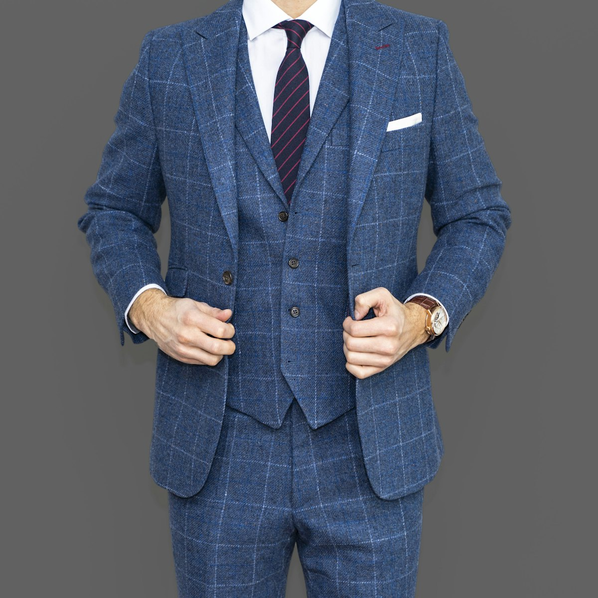
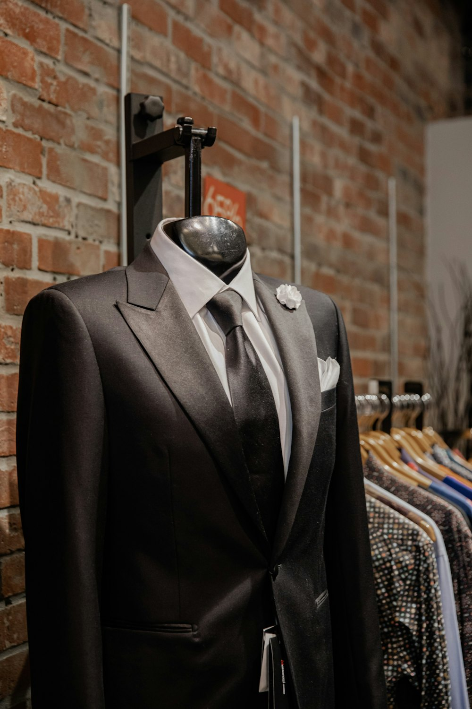
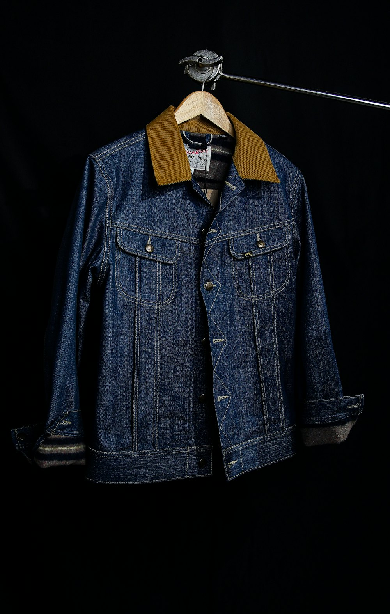

Custom Menswear · Frisco, Texas
Clothing made for you,
and you alone.
A full-service, concierge style, custom-made men's clothing experience at The Star in Frisco. Your personal stylist, premium fabrics, and a perfect fit across every category, from Business to Social to Casual.
- Personal Stylist
- Premium Fabric
- 100% Guaranteed

Why J.Hilburn
High Touch. High Tech. High Fashion.
We've obsessively re-engineered custom menswear into one effortless, personal experience, so getting dressed always works in your favor.
High Touch
As your personal stylist, I will learn your lifestyle, taste, and fit, guiding every choice with one-on-one attention, from first consultation to final delivery.
High Tech
Proprietary technology turns precise measurements into a custom pattern built just for you. Repeatable, refined, and ready to reorder in a click.
High Fashion
The world's finest fabrics, tailored across every category, from Business to Social to Casual, for a modern, considered look that's unmistakably yours.
The only lifestyle brand offering a full-service concierge style, custom-made men's clothing experience across all categories. I combine personal one-on-one styling with the power of proprietary technology to create clothes built just for you, crafted with the best fabric in the world, delivered directly to you, at a great value. 100% Guaranteed.
Studio portrait to come
Meet Your Stylist
Phyllis Walker
Owner & Personal Stylist
As your personal J.Hilburn stylist, Phyllis brings a relationship-first approach to building wardrobes men actually love to wear. From the boardroom to the weekend, she pairs an expert eye with J.Hilburn's custom craftsmanship to make getting dressed effortless, and make you look and feel your absolute best.
Every piece is a conversation: your fit, your fabrics, your life. The result is a wardrobe that's unmistakably yours, backed by service that doesn't stop at delivery.
The Lookbook
Made just for him.
Custom-made to fit his body, his personality, and his lifestyle.


The Details
Made in the details.
Samples in Studio
See and feel the cloth before you choose it.
Quality Fabrics
Mills in Italy, England and Portugal.
Accessories & Leather Goods
Belts, shoes and finishing pieces.
Customization Options
Linings, buttons, collars, monograms.
How It Works
From first consult to final fitting.
Stylist-led and appointment-first. A relaxed, guided path from your first consultation to a wardrobe you'll reach for again and again.
- 01
Book your consultation
Schedule a relaxed one-on-one with Phyllis at the studio in The Star.
- 02
Get measured & choose fabrics
Precise measurements, then choose from the world's finest fabrics and every detail.
- 03
We craft it
Your garment is cut and tailored to your exact pattern and specifications.
- 04
Delivered & fitted
Your wardrobe arrives ready to wear, refined at a final fitting, and effortless to reorder. 100% guaranteed.
Craft & Detail
Proof in every detail.
See the craftsmanship up close: the finishing, the fabric, the construction.
Hand-finished monograms
Your initials, quietly yours, on cuffs, collars, and more.
Fabric from the finest mills
Patterns precisely cut and matched, in fabrics chosen with you.
Considered construction
Every seam, button and lapel, finished to last.
Visit
Come see us at The Star.
Stop in for a relaxed, no-pressure conversation about your wardrobe. Appointments encouraged.
- Address
- 6635 Cowboys Way, Suite 105
Frisco, Texas 75034 - Call or Text
- (214) 542-5930
- phyllis.walker@jhilburnpartner.com
- Studio Hours
- Wednesday to Friday, 11AM – 5PM
Other days by appointment
Let the Compliments Begin
Book your private fitting.
One conversation is all it takes to start building a wardrobe made entirely for you.
Schedule Your Appointment